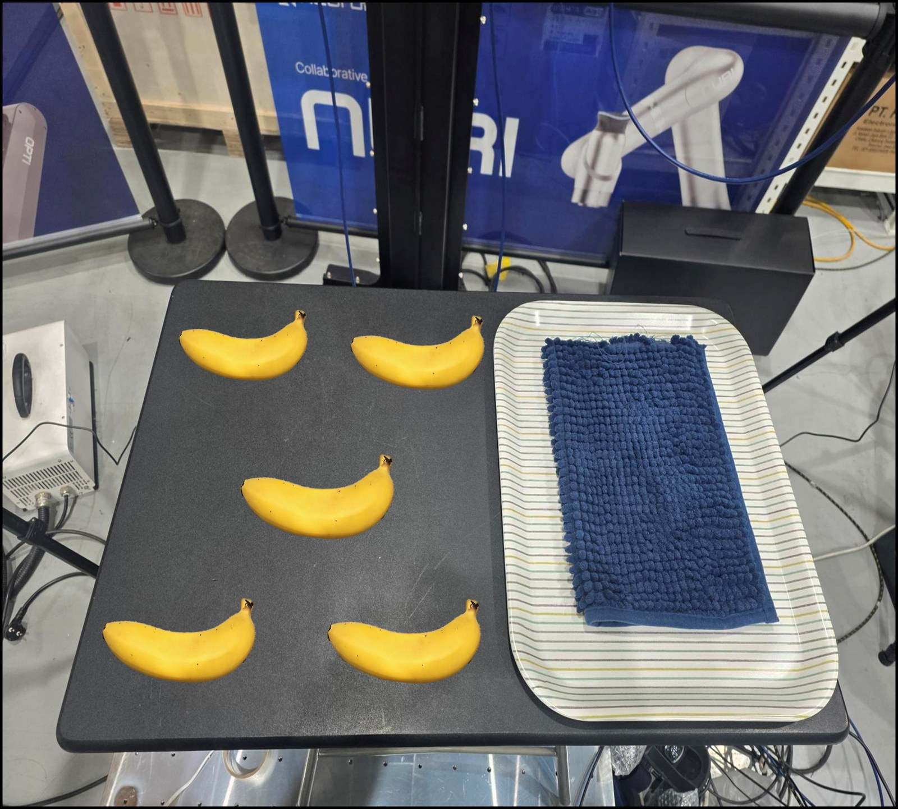

수집·학습·실행을 연결하고, 실패와 매끄럽지 않은 동작을 관찰
← Work ExperienceCASE STUDY
04 / IMITATION LEARNING
고정 조건 10회에서,
성공률 90%까지
v1의 고정 조건 10회에서 v2의 무작위 50회로 범위를 넓혔습니다. 중복과 빈 조합을 찾아 v3의 조건별 100회 수집으로 개선했고, 학습 Loss 0.0037과 실로봇 성공률 90%를 확인했습니다.
Neuromeka 인턴 · 2025.12 ~ 2026.06
- 수집 전략의 발전
- v1 고정 10회 → v2 무작위 50회 → v3 조건별 100회
- v3에서 바꾼 것
- 80개 기본 조건 + 20회 추가 반복 · 총 100회 수집
- v3 학습·실행 결과
- Loss 0.0037 · 실로봇 성공률 90%

위치 후보트레이v1 → v2 → v3
기본 동작 확인에서, 위치 변화에 대응하는 정책으로
중복된 조건과 빠진 조합, 특정 위치·자세의 파지 실패를 발견
학습 Loss 0.0037 · 작업 영역 내 실로봇 성공률 90%
01 / v1 Baseline
v1에서는 고정된 조건 10회로 수집부터 실행까지 연결했습니다.
누리 양팔과 2지 그리퍼로 바나나를 집어 트레이에 놓는 Pick & Place를 실험했습니다. 한 팔은 바나나와 트레이를 관측하도록 고정하고, 다른 팔은 VIVE로 교시했습니다. 손목 카메라 2개의 영상을 사용했습니다.
첫 실험인 v1에서는 로봇 시작 자세·바나나 위치와 자세·트레이 위치를 모두 고정하고 10회 교시했습니다. ACT를 학습한 뒤 TCP Relative 설정을 켠 경우와 끈 경우의 실제 로봇 실행을 비교했습니다.
성공하는 경우도 있었지만 실패가 반복됐고, 성공한 동작도 매끄럽지 않았습니다. 이 결과를 출발점으로 삼아, v2에서는 바나나의 위치와 자세에 변화를 주며 수집 범위를 넓혔습니다.
무엇을 보고, 어느 팔로 조작했는가

02 / v2 Findings
무작위로 놓다 보니, 같은 조건은 겹치고 빈 조합은 남았습니다.
v2에서는 로봇 시작 자세와 트레이 위치를 유지하고, 바나나의 위치·자세를 무작위로 바꾸어 50회 수집했습니다. v1의 고정된 배치에서 한 걸음 더 나아가, 작업 영역의 다양한 위치에 대응하도록 데이터를 늘렸습니다.
랜덤한 위치에 바나나를 놓더라도 이전과 비슷한 위치나 같은 자세가 반복될 수 있었습니다. 수집 횟수는 늘었지만, 위치와 자세의 다양성이 고르게 확보된 것은 아니었습니다. 이 중복 때문에 데이터 맵에서 충분히 채워지지 않은 위치·자세 조합이 남았을 것으로 판단했습니다.
실행 결과를 위치와 자세로 나누어 보니, 수직 자세에서 특히 ①·④ 위치의 파지가 어려웠습니다. 학습 Loss는 0.0067이었지만 실제 작업에서는 특정 조건의 실패가 남았습니다.
v2 검증 위치
①②③④⑤
트레이
고정
고정
v2 위치·자세별 실행 기록
| 자세 | ① | ② | ③ | ④ | ⑤ |
|---|---|---|---|---|---|
| 수직 | 실패 | 성공 | 성공 | 실패 | 성공 |
| 수평 | 성공 | 성공 | 성공 | 성공 | 성공 |
v2 발표 자료의 위치·자세별 실행 결과
v2 · 발견
무작위 50회 수집
위치·자세가 중복되고, 작업 영역의 일부 조합은 충분히 포함되지 않음
v3 · 개선 방향
포함할 조건부터 나누기
위치·자세별 수집표를 만들고, 실패가 많았던 조건에는 반복을 추가
03 / v3 Design
v3에서는 위치·자세를 나누고, 부족한 조건을 더 수집했습니다.
트레이 4위치 · 바나나 5위치 · 자세 4종
총 100회 교시 수집
트레이와 바나나의 위치를 구분하고, 자세를 수평·수직·좌측 대각·우측 대각의 네 가지로 나누었습니다. 조합별로 수집 여부를 확인해 빈 조건을 채우고, 파지가 어려웠던 위치·자세는 더 반복했습니다.
v3 · 위치와 자세를 나누어 수집한 기록

- 시야에 물체와 목적지를 함께 담기
트레이 위치를 바꾸어도 카메라에 바나나와 트레이가 함께 들어오는지 확인했습니다. 조작 중에는 손목 영상을 보며 가림을 점검했습니다.
- 일관된 파지·배치 동작으로 교시
바나나 중앙을 잡고 천천히 움직였습니다. Pick과 Place에서는 잠시 멈춘 뒤 다음 동작으로 이어지도록 했습니다.
- 불안정한 시연은 제외
덜컹거리거나 멈칫한 Episode는 제외하고 데이터를 선별한 뒤 학습과 실행을 반복했습니다.
04 / v3 Results
v3에서는 위치를 바꾸어도 성공률 90%를 확인했습니다.
v3 · TRAINING
0.0037ACT 학습 Loss
v3 · REAL-ROBOT RESULT
90%작업 영역 내 위치 변화에 대한 Pick & Place 성공률
수집 조건을 나누어 학습한 v3의 학습 Loss는 0.0037이었습니다. 이 정책을 실로봇에서 실행했습니다. 설정한 작업 영역 안에서 바나나를 어느 위치에 놓더라도 성공률 90%를 확인했습니다. 바나나에 접근해 파지하고 트레이에 옮겨 놓는 작업의 실행 결과를 확인했습니다.
v2
특정 위치·자세에서 파지 실패
무작위 50회 수집 후에도 수직 자세의 ①·④ 위치 등에서 실패가 나타남
v3
위치 변화에도 성공률 90%
조건을 나눈 100회 수집과 데이터 선별을 거쳐 작업 영역 내 실행 성능 개선
05 / Takeaway